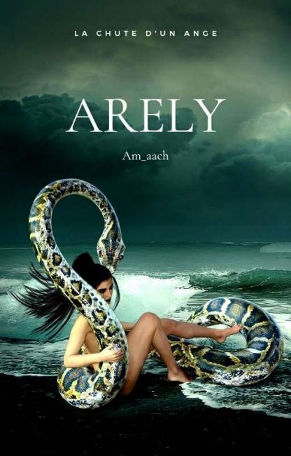

Salut ! Et oui, Am_aach c'est moi. Je me cache derrière ce pseudo par souci d'anonymat (imaginez juste tous les fans histériques qui me suivraient en courant dans la rue, espérant un autographe de ma part.
Non vraiment je préfère éviter ça. Tout ce que vous avez besoin de savoir, c'est que j'aime écrire. Tellement que c'en est une passion et ce, depuis mon plus jeune âge !

Arely est une jeune fille de vingts ans qui décide de s'expatrier en Australie.
Elle va malheureusement y faire de très mauvaises rencontres, en se faisant kidnapper par des
membres de gang. Entre menaces, deuil, et espoir, Arely va tout faire pour garder ses proches hors de danger.
Si vous êtes intéréssé, voici le lien Wattpad qui mène à mon histoire!